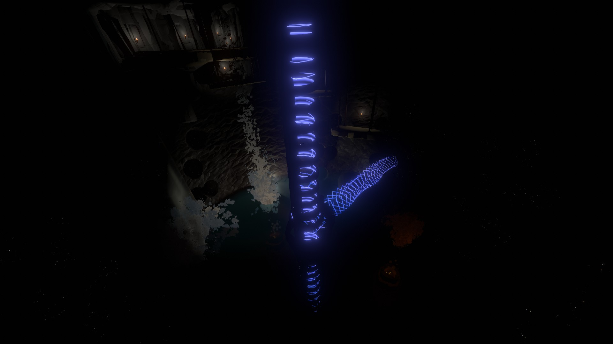

TIMBER HEARTH
Timber Hearth, the second closet planet to the sun, is a mostly grassy planet with large craters, rivers, forests, geysers, waterfalls, and snowy mountains. Timber Hearth is the home planet of the Hearthians, a blue-skinned humanoid alien species with four eyes. Other than the Hearthians, fireflies, crickets, and a few other varieties of fish live on Timber Hearth.

PLACES OF INTEREST
INSIDE THE VILLAGE
The Launch Tower & Postcards From Orbit
The Launch Tower is located on top of a hollowed out tree with a launch pad on top. This is the starting location for the player's spaceship. The launch pad is accessible by a lift that requires launch codes to operate, which can be obtained from Hornfels. Inside the hollowed out part of the tree is miscellaneous spaceflight equipment and a slideshow called Postcards from Orbit where live footage from the "Sky Shutter" satellite orbiting Timber Hearth can be viewed.
Mica's Model Ship Station
Just off the path from the launch tower, Mica can be found next to the controls for a small model of the player's spaceship. Mica's model ship can be used to practice the game's flight controls. There are three landing zones for the model ship: a large landing zone, a small landing zone, and a geyser that the model ship can fall into or be shot out of. Aside from being a tutorial, the model ship can be used to obtain two achievements: "Mica's Wrath", where you destroy the model ship by flying it into Hollow's Lantern or the sun, and "From the Hearth to the Moon", where you land the model ship on the Attlerock.
Zero-G Cave

The Zero-G Cave is a cave at the very center of Timber Hearth used by the Outer Wilds Ventures to train new astronauts. Inside the Zero-G Cave is a mineshaft where the player can find a miner named Tuff. Timber Hearth's caves are very unique, as the stone inside is covered in small glowing dots, making it look like a starry night sky in the dark. Further into the Zero-G Cave, a broken piece of machinery is located in a spot with no gravity that can be used to practice repairs in space.
Fenced-Off Ghost Matter

A small fenced-off area containing teal colored crystals and a mounted scout camera next to it. The sign nearby warns the reader that a pocket of ghost-matter, a strange and dangerous substance invisible to the naked eye that can only be seen through camera, is inside the fence. The sign also warns that ghost matter is uniquely painful and "will probably kill you." A young Hearthian named Arkose can be found tossing rocks into the ghost matter, temporarily revealing its presence. Arkose tells the player that they heard the ghost matter inside the fence used to be a lot bigger in the past and that it very slowly evaporates over time. They also tell the player that they heard that ghost matter is very painful and will cause a burning feeling if touched.
Scout-Launcher Platform
The Scout-Launcher Platform is located near the fenced-off ghost matter and has a stationary scout launcher as well as four signs informing of what can be seen if the scout is launched in those directions. To the northwest are the Geyser Mountains, to the south is the Quantum Grove Crater, to the east are the Nomai Ruins, and to the north is Youngbark Crater.
The Observatory

The Observatory is a museum and scientific research station that contains many space-related objects. On the top floor of the Observatory is the telescope room, where Hornfels can be found using a device. A miniature model of the solar system that moves in real time can be found in the center of the room as well. The museum part of the Observatory features thirteen displays. At the entrance, there are two photos depicting the founders of the Outer Wilds Ventures and the flag planted on the Attlerock can be found. A Nomai statue can also be seen at the entrace, where Hal can be found analysing it.
In the main part of the museum, the player can view a set of three balls demonstrating the effects of the Attlerock's gravity, a piece of Nomai writing that was integral to the development of the translator tool, Nomai pottery discovered on Brittle Hollow, a Nomai skeleton, a display showcasing a scout and a Nomai warp core, a gravity crystal displayed on the wall, a small anglerfish specimen, a display about the life cycle of a sun, and finally, a quantum shard displayed outside. If the Echoes of the Eye DLC is installed, a display showcasing the deep space satellite can also be viewed. Otherwise, there is a sign stating that the display is under development.
OUTSIDE THE VILLAGE
Radio Tower

A radio transmission tower and small shack located to the northeast of the village designed to receive photos takes by the deep space satellite. Photos of the solar system were made possible by the satellite's vertical orbit that carries it high above and below the plane of the solar system. The deep space satellite is also what generates the real-time solar system map used by the player. If the Echoes of the Eye DLC is installed, the door will be open. Otherwise, the door will be closed, with a note stating that the tower is closed due to fire damage from a model rocket. Nearby the radio tower is a small thicket that contains an old campsite and a journal page describing how to doze off by a campfire.

Inside the radio tower are several photos of the entire solar system taken by the deep space satellite hanging on the walls. A video log can be found where Hornfels notices something strange in one of the photos, but concludes that equipment malfunction is the only sensible explanation for it. They mention that they'll contact Gabbro to check the deep space satellite's lens for any defects. Travelling to the satellite reveals that Gabbro did not find any equipment malfunctions, leaving the strange shadow found on one of the photos unexplained.
Geyser Mountains

The Geyser Mountains are large mountains scatter across Timber Hearth that periodically spout water columns and are capable of launching objects through the atmosphere. A set of four smaller Geyser Mountains lies to the northwest of the village and a single larger Geyser Mountain south of the village. Each Gesyer Mountain has a system of connecting currents that can lead into several different resevoirs, with some containing things to be found inside.
Mining Site 2B
Mining Site 2B is a Nomai mine located within the largest geyser mountain on Timber Hearth in a large, dark, and open cave lake with walls lined with pockets of mined-out ore, as well as volcanic vents at the bottom of the cave that periodically spout geyser columns. The mine is ringed with platforms leading to a gravity lift in the center of the cave. This mining site was used to harvest ore for the Ash Twin Project. Conversations left behind by the Nomai detail what they planned to use the ore for and their intent to use only as much as they needed as to not rob any future advanced life on Timber Hearth of the ability to create. Outside of the mining site is a bridge that connects to the entrance to the Nomai Ruins. Below this bridge is a resevoir where there is Nomai writing discussing where to locate a mine after finding native fauna in Mining Site 2A, eventually settling on Mining Site 2B. A mural can also be found depiciting the Nomai discovering small, blue, four-eyed aquatic creatures, most likley the ancient ancestors of the Hearthians.
Youngbark Crater

Youngbark Creater is a large crater to the north of the village where the player can find Tektite investigating a large Dark Bramble seed that had recently crashed there. Speaking with Tektite reveals that the seed is beginning to infect Timber Hearth and needs to be destroyed as soon as possible. Shooting a scout into the seed reveals that the seed is much larger on the inside, containing an anglerfish skeleton with a few trees and a campfire resting on its jaw. When using the signalscope, a harmonica can be heard coming from inside the seed as well.
Quantum Grove Crater

The Quantum Grove Crater is a forested crater to the south of the village. A passage within the crater leads to the Grove itself, which contains the Grove Shard. The Grove Shard is one of many quantum shards that can be found around the solar system, and just like the other shards and the Quantum Moon, it emits a quantum frequency that can be heard with the signalscope. The shard exhibits quantum properties and changes locations while unobserved. Because of its quantum properties, it causes other objects within the grove to move when unobserved, including trees, rocks, and a signpost containing a poem written by Gabbro. The lines of the poem also change order when unobserved.

Each line of the poem is written on pieces of wood shaped like arrows. Lines with arrows facing the same direction will rhyme. The four lines of the poem are:
"The quiet shade" pointing right,
"Across old bark" pointing left,
"In the ancient glade" pointing right,
"It's always dark" pointing left.
THE ATTLEROCK
The Attlerock is Timber Hearth's moon and is almost completely barren, but features many craters on its surface as well as a few notable places of interest. The moon's darkside features a large impact crater with large frozen shards scattered around.

Lunar Outpost
The Lunar Outpost is a small forested camp that used to serve as a pit-stop for Hearthians making their first space flight, but hasn't seen many visitors since the space program's more turbulent days. Esker lives here and can be found here whislting as they rock on a rocking chair. They offer a few conversations and will admit to sometimes shooting little scouts at the village to feel less lonely. They comment that they sometimes wonder if everyone had forgotten about them.
Lunar Lookout
The Lunar Lookout is located at the Attlerock's north pole not far from the Lunar Outpost. It consists of a set of platforms set in a crater at the north pole, the last of which has a lamp and a notepad. This is where Esker used their signalscope to monitor the solar system, track the other travelers, and even spy on conversations down on Timber Hearth. According to Esker, this is the best location to listen to all of the travelers with the signalscope, as it remains perfectly level with the solar system at all times. Below are previews of each of the travelers' songs. From left to right: Chert's drums, Esker's whistling, Riebeck's banjo, Gabbro's flute, and a harmonica.
Eye Signal Locator
The Eye Signal Locator, a device used to pinpoint the sources of distant signals, is the Nomai's first attempt at locating the Eye of the Universe. The Locator has four different settings set to locate the Sun, Giant's Deep, Brittle Hollow, and the Eye of the Universe. When placing the control ball on one of the settings, the rings around the locator will spin until they face the celestial body the setting corresponds to and transmit the sounds that come from it. When trying to locate the Eye of the Universe, the rings will spin endlessly, never landing on a target.
Large Impact Crater

The Large Impact Crater rests on the dark side of the Attlerock, dotted with large shards of otherworldly ice. A lantern and some Hearthian tools can be found near one of the shards, along with a recording from Chert. In the recording, Chert notes that the composition of the samples they took from this impact site matches the composition of the ice on the outskirts of Dark Bramble. They theorize that the Attlerock was hit by a piece of the planet that used to be where Dark Bramble now lies.